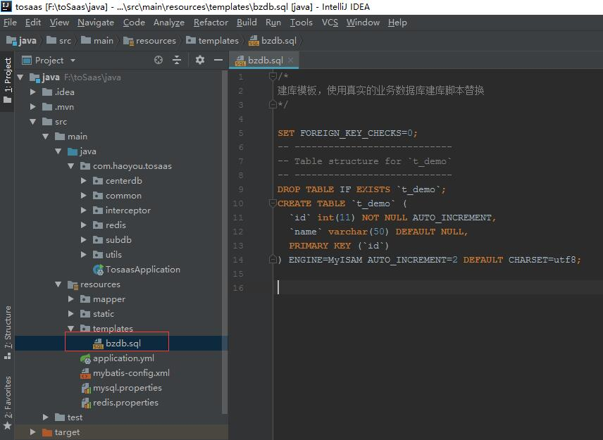
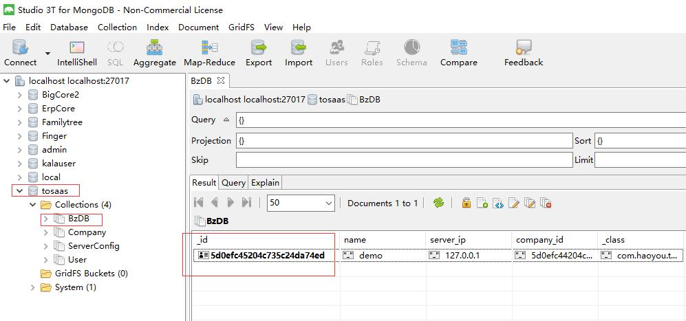
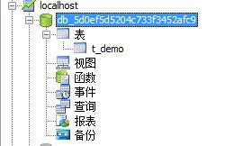
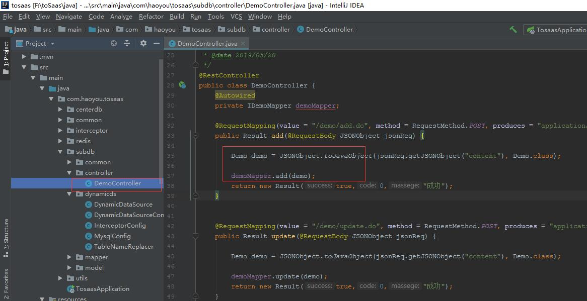
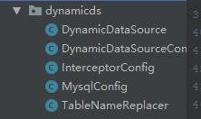
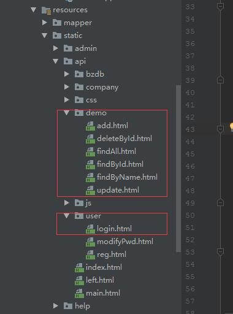
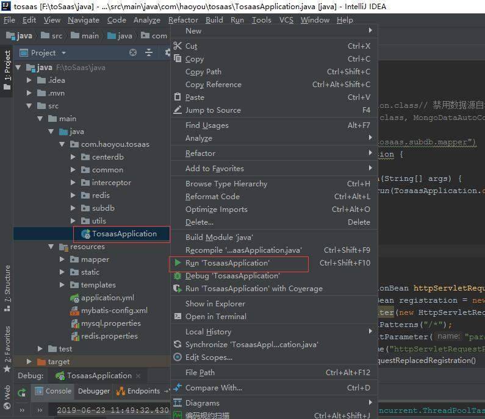

业务对接
1、测试业务库操作
系统在初始化的过程创建了一个用于测试的业务库，建库脚本如下

注意脚本里只有建表语句，没有建库语句，因为数据库名是动态变化的。
我们来看看初始化完成后所建的数据库，首先看看mongodb 库

可以看到系统创建了tosaas数据库，并创建了业务库BzDB 里的一条记录，代表生成了一个业务库，并用_id值作为mysql的数据库名称，
创建一个mysql数据库，用mysql客户端打开数据库查看

2、演示业务库的增删改查操作

打开DemoController 可以发现，所有的增删改查操作与传统的单数据源的代码没有区别。因为我们使用了mybatis的拦截器，如下

拦截器层已经替我们路由到正确的业务库数据源上。我们使用源码提供的demo api 来测试操作

首先运行代码

使用浏览器访问地址 http://localhost:8080/help/step1.html
(1) 使用初始化时设置的管理员账号登录获取token
(2) 使用获得的token值查询我的业务数据库
(3) 往业务数据库mysql 添加记录
(4) 从业务数据库查询记录
(5) 修改记录
(6) 删除记录